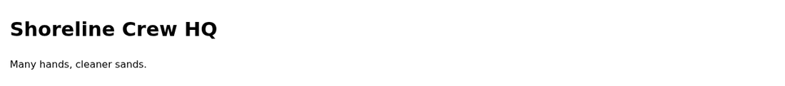

Session 1: Why React + TypeScript and Your Workspace
How to teach the first session of React + TypeScript: Build a Modern Web App. Welcome a room of JavaScript developers new to TypeScript and React, find out which machines are ready and what the room remembers about arrays, objects and promises, then show on one small file why React and TypeScript belong together (Node prints NaN, tsc names the typo) and make every laptop ready: an install clinic, the course API and a fresh Vite react-ts app, one typo caught in three places, two labs on running versus checking, and a check learners can rerun all course.
How to Use This Guide
- Same rhythm for both lessons: frame (the goal and one mental model) → live demo (you type, they follow) → guided lab (a kit lab: new practice on the lesson's ideas, never the lesson's own project) → start the lesson's own project. The lesson exercises, quiz and journal are homework.
- Type, do not paste. Every command below was run to produce the output printed under it, in a learner's terminal with Node v24.22.2 and npm 11.19.1: Lesson 1.1's in a folder with TypeScript 7.0 installed, Lesson 1.2's on the course API and on a copy of the app exactly as a learner has it at the end of the lesson. Where the lesson shows the same command, the kit's output is the lesson's, word for word. Ask for a prediction before every run.
- The lessons are the reference. Keep
lesson_01.htmlandlesson_02.htmlopen in browser tabs for the tables, the diagrams and the per-system install notes. Labs live inlabs/module-01/(learners copy the kit'slabs/folder into their course foldershoreline/):starter/folders andTASKS.mdare handouts;solution/folders are yours until the session is over. - Session 1 is different in two ways. It opens with 30 minutes of welcome, environment check and diagnostic instead of the usual 10-minute warm-up, and Lesson 1.2's room time is mostly an install clinic: installing Node and VS Code, unzipping the API and creating the Vite project are prework from the kit's setup guide, so the room fixes what went wrong instead of watching installers.
- The kit has three parts that can each run on their own: Part 1, TypeScript and React Foundations (Sessions 1 to 9); Part 2, Data, State and Routing (10 to 17); Part 3, Production React (18 to 26). Nothing in this session depends on a later part. Teal blocks are hands-on, amber blocks are watch-outs. Lesson codes (1.1, 1.2) match the course site.
Two installs (Node LTS, VS Code), a zip to unzip in the right place and a project created with npm create vite@latest that downloads about thirty packages, on three operating systems, each with its own trap: a terminal opened before Node was installed, PowerShell's script policy, Node 20 still first on the PATH, an unzip tool that adds a folder level, a course folder inside OneDrive. Done together on venue Wi-Fi, it fills three hours and nobody reads a compiler error. Before: send the setup guide a week ahead (Node LTS, VS Code, shoreline-api.zip unzipped into shoreline, npm create vite@latest shoreline-hq -- --template react-ts and npm install, the kit's labs/ folder in shoreline, then the environment check) and ask every learner to reply with its last line. In the room: the check gets 12 minutes in the opening; a NOT READY machine gets a ready partner until the 25-minute install clinic at 1:40, not your attention during Lesson 1.1 (which needs only a browser). After: whoever is still not ready leaves with a numbered plan and runs the check again before Session 2.
Before the Session
- ☐ A week before: email the setup guide (Lesson 1.2 as a checklist: Node LTS 24 or newer, VS Code, the course folder
shorelinewithshoreline-apiunzipped into it,npm create vite@latest shoreline-hq -- --template react-tswith Oxlint and "No" to install-and-start,npm install, the kit'slabs/folder copied intoshoreline, then with the API runningnode labs/module-01/l1_0-orientation/check_environment.mjsfromshoreline). Ask learners to reply with the last line it prints. No reply means a setup risk: chase it. - ☐ Files to hand out (shared folder or USB stick, in case the network fails): the whole
labs/folder without thesolution/folders;shoreline-api.zipandlesson-02-end.zipfrom the course site's downloads (the finished Lesson 1.2 code: a learner who cannot create the project in time unzips it and runsnpm installinshoreline-hq). If the venue network is slow, put the Node LTS installers (Windows .msi, macOS .pkg) and VS Code on the stick too, and runnpm installonce in each lab'sstarter/at home so your npm cache can serve the room. - ☐ Run the kit check once:
python3 labs/check_labs.py module-01from this kit's folder (19 runs, under a minute: the starters fail as shipped, the solutions pass their tests, type checks and lint, the debug handout fails exactly as declared, and the environment check says READY on a ready course folder and NOT READY with the right FIX line on three broken ones). It starts its own private copy of the API;--api http://localhost:4000uses yours instead. Then run the environment check on the projector machine so you can show what READY looks like. - ☐ Projector machine: VS Code open on a
shorelinefolder at a large font, two terminals ("api" runningnode server.ts, "hq" inshoreline-hq) at 18 pt or larger; a browser with the TypeScript Playground, http://localhost:4000/api and http://localhost:5173 in tabs, DevTools docked at the bottom;lesson_01.htmlandlesson_02.html. For the 1.1 demo: a scratch folder with TypeScript installed and no tsconfig.json (npm init -y, thennpm install --save-dev --save-exact typescript@7.0.2): with a tsconfig present,npx tsc --noEmit spots.tsstops with error TS5112 instead. - ☐ Board, before learners arrive: the two mental models from Lesson 1.1 (React = the tide chart that redraws itself; TypeScript = the spell-checker for your data); the flow "you write .ts/.tsx → tsc checks → Vite removes the types → the browser runs JavaScript"; the triage line "node not recognized = new terminal · nothing answers at :4000 = start the API · no shoreline-hq = npm create vite · tsc errors = read the first one"; and the course folder as a box:
shoreline/withshoreline-api/,shoreline-hq/andlabs/. - ☐ Print or share: the workbook (its Start Here page has the environment checklist and the diagnostic), sticky notes for help flags and the exit ticket.
| Symptom | Cause | Fix |
|---|---|---|
'node' is not recognized / command not found: node | The terminal was opened before Node was installed (old PATH) | Close every terminal, VS Code included, and open a new one; Windows: run the installer again with Add to PATH. |
PowerShell: npm.ps1 cannot be loaded because running scripts is disabled | Windows script policy, not a broken install | Use Command Prompt, or Set-ExecutionPolicy -Scope CurrentUser RemoteSigned (Lesson 1.2). |
node server.ts: ERR_UNKNOWN_FILE_EXTENSION, Node.js v20… | An old Node first on the PATH (an old install, or nvm's default) | Install the current LTS; with nvm: nvm install --lts and nvm alias default lts/*, then a new terminal. |
nothing answers at http://localhost:4299 (no answer … | The API is not running, or runs on another address | Terminal 1: cd shoreline-api, node server.ts, leave it open; give the check the address the API printed. |
port 4000 is already in use | The API is already running in another terminal | Use that one (look through the terminals), or Ctrl+C it first. |
no shoreline-api/server.ts here / shoreline-api/shoreline-api | The check was run from the wrong folder, or the unzip tool added a level | cd into shoreline; move the inner shoreline-api up one level. |
no shoreline-hq here: in the course folder run npm cr… | The Vite project was not created (or in the wrong folder) | In shoreline: npm create vite@latest shoreline-hq -- --template react-ts (Oxlint, No), then cd shoreline-hq, npm install. No time? Unzip lesson-02-end.zip and npm install. |
npm error enoent Could not read package.json | An npm command in shoreline instead of shoreline-hq | cd shoreline-hq; read the prompt before every command. |
Ok to proceed? (y) and nothing happens / very slow npm create | Venue network or proxy; the first npm create downloads create-vite | Wait; or the USB-stick plan: lesson-02-end.zip + npm install from your npm cache. |
npm is very slow, or the check says synced to the cloud | The course folder is inside OneDrive, iCloud or Dropbox | Move shoreline to an unsynced folder. |
No code command (a CHECK line) | VS Code's command-line launcher is not on the PATH | Command Palette › Shell Command: Install 'code' command in PATH (macOS); Windows installer's Add to PATH. Not required. |
Port 5173 taken: Vite says Local: http://localhost:5174/ | A second dev server is running | Use the address it prints, or stop the other one. |
Session 1 Agenda (3 hours)
| Clock | Minutes | Segment | What happens |
|---|---|---|---|
| 0:00 | 30 | Welcome, environment check and diagnostic | Introductions, how the course runs, check_environment.mjs on every machine, a six-question readiness diagnostic (not graded). |
| 0:30 | 10 | 1.1 Frame and mental model | The tide chart and the spell-checker: what React does, what TypeScript does, what TypeScript cannot do. |
| 0:40 | 15 | 1.1 Live demo | One file, twice: Node prints NaN, tsc names the typo; three mistakes, three messages; a union of four words. |
| 0:55 | 15 | 1.1 Guided lab | labs/module-01/l1_1-why-react-typescript/starter: Task 1 in pairs, an interface for a real API answer. |
| 1:10 | 10 | 1.1 Start the lesson project | Step 5 in pairs: the screen-to-data map. Steps 1 to 4 (the Playground) go home. |
| 1:20 | 10 | Break | NOT READY machines line up for the install clinic. Leave the two mental models on the board. |
| 1:30 | 10 | 1.2 Frame and mental model | The supply shed and the beach: two terminals, one course folder, running versus checking. |
| 1:40 | 25 | 1.2 Install clinic | Fix the machines that were NOT READY, by tool; ready learners help, then rerun the check. |
| 2:05 | 15 | 1.2 Live demo | Node and npm, the API's answers and headers, how the page starts, one typo in three places, lint and build. |
| 2:20 | 15 | 1.2 Guided lab | labs/module-01/l1_2-your-workspace/starter: Tasks 1 and 2, running versus checking on a small file. |
| 2:35 | 15 | 1.2 Start the lesson project | Steps 2 to 4: clear the template, break it on purpose, lint and build clean. |
| 2:50 | 10 | Wrap-up | Exit ticket (3 questions), homework, bring list for Session 2. |
| Total | 180 | Ends at 3:00. |
In the room. The lesson pages estimate 115 + 160 = 275 minutes for a learner working alone, and after the 30-minute opening, the break and the wrap-up the room has 130. Lesson 1.1 keeps its full shape (model, demo, lab, project start). Lesson 1.2's installation sections are prework from the setup guide: the room uses its time for an install clinic, a running-versus-checking demo, a short lab and Steps 2 to 4 of the lesson project.
Goes home (about 2 to 3 hours). Lesson 1.1's project Steps 1 to 4 in the TypeScript Playground and the rest of the screen-to-data map; Lesson 1.2's project for anyone who finished setup in the clinic (Steps 1 to 5); both labs' remaining tasks and Lab 1.2's debug handout; each lesson's Hands-on Exercises (1.2's Exercises 1 and 2 are part of that lesson's time); both Quick Quizzes; both journal entries; both "Before the Next Lesson" lists. Anyone still NOT READY finishes the setup with the numbered plan from the clinic.
Protect, in this order: the environment check result for every learner (nobody leaves without knowing whether their machine is ready and what to do next); the install clinic; the 1.1 "run it, then check it" step (the idea every later lesson leans on); the 1.2 "one typo in three places" step. Cut first: the 1.1 "only four words" step and the 1.2 "how the page starts" step, then the 1.1 project start (send the map home), then the 1.2 project start (learners do Steps 2 to 4 at home).
Opening Segment
Welcome, Environment Check and Diagnostic
30 min| 5m | Welcome and introductions |
| 5m | How the course runs: 26 sessions in three parts, one or two lessons a session, the room and home split, the journal |
| 12m | Environment check: check_environment.mjs ends with READY on every machine, or the machine gets a partner and a clinic slot |
| 8m | Diagnostic: six readiness questions, not graded |
- Welcome (5m). One minute on yourself, including a bug that reached users and a type checker would have caught (a NaN on a price, an undefined in a heading). Then a quick round: name, what they want to build with React and TypeScript (a product at work, a portfolio, a phone app later), and how much JavaScript they write today. Write three or four goals on the board; they come back in the 1.1 journal prompt. Housekeeping in one breath: break at 1:20, where the lab files are, and "if you are stuck, put a sticky note on your laptop lid and keep trying while I get to you."
- How the course runs (5m). Show the course home page. Say: "Twenty-six sessions of three hours in three parts. Part 1 teaches the TypeScript you need, then React in TypeScript, up to forms and accessible components. Part 2 connects Shoreline Crew HQ to its API: fetching, hooks, typed state and routing. Part 3 makes it production-ready: server state, forms at scale, tests, the build and a free deployment. Each part can stand alone." Then the deal: "Each lesson was written for someone working alone for about two to two and a half hours, so two do not fit in three hours. In this room we do what is hard alone: the mental model, a live demo, a guided lab, and the first steps of each project. At home you finish the projects and do the exercises, quiz and journal: plan on two to three hours a week." Scroll once through
lesson_01.html: objectives, mental models, common mistakes, a project in steps, exercises with hidden solutions, a quiz, a journal prompt. - Environment check (12m). Say: "Before any new ideas, we find out which machines are ready." On the projector, then theirs: 1 terminal 1 in
shoreline-api:node server.ts, leave it running; 2 terminal 2 in the course foldershoreline(VS Code: View › Terminal); 3node labs/module-01/l1_0-orientation/check_environment.mjs. Done = the last line saysREADY for React + TypeScript: Build a Modern Web App(READY WITH NOTESis fine: nocodecommand, a synced folder). Anyone who saw READY at home runs it again and becomes a helper. NOT READY falls into three piles: Node missing or too old (often a new terminal fixes it), FIX lines on a working machine (the API not started, the wrong folder,npm installnot run: two to five minutes, fix now), nothing installed or no project at all (do not start a download now: pair with a ready neighbor; install clinic at 1:40). Write the third pile's names on a sticky note. - Diagnostic (8m). Say: "Six quick questions on the JavaScript this course builds on: arrays, nested objects, map and filter, promises, template literals and the terminal. Not a test, nobody collects it. It tells you what to brush up and tells me what to slow down for." Learners answer D1 to D6 on the workbook's Start Here page (about four minutes), then show fingers (1 to 4 for A to D) as you reveal each. Keep a tally of wrong answers per question on a sticky note.
Answers: D1 A) 3 Driftwood Cove; D2 C) { name: 'Driftwood Cove', town: 'Port Marisol' }; D3 D) [ 'Jetty Rocks Deep Clean' ]; D4 A) Promise { <pending> }; D5 B) NaN spots left; D6 B) cd shoreline, then node labs/module-01/l1_0-orientation/check_environment.mjs.
- D1 to D3 (arrays, nested objects, map and filter) predict Sessions 2, 3 and 6: Module 2 types exactly these shapes, and every React list is a
map. Two or more misses on D3: givemapandfilteran extra minute in Session 2's warm-up. - D2 (objects inside objects) is the shape of every cleanup (
event.site.name). A miss here becomes a red underline in Lesson 2.2 and an[object Object]on a page in Module 3. - D4 (promises) decides how Lesson 4.1 (effects and fetching) goes. Learners who miss it: Lab 1.2's debug handout has the same bug; do it with them at home.
- D5 (undefined becomes NaN) is today's Lesson 1.1 in one line. A miss is fine: the demo answers it at 0:45. Ask those learners to explain it back at the wrap-up.
- D6 (folders) predicts trouble in the next hour:
Cannot find modulefor the check,Could not read package.jsonfor npm, almost always the folder. Learners who missed it get the typing role in the lab pair, with you nearby for the first command. - Three or more wrong: not a problem to announce. Pair them with a strong neighbor today, and at the wrap-up hand them
labs/module-01/l1_0-orientation/diagnostic_starter.mjs: D1, D2 and D3 answered by JavaScript, one small mistake each (diagnostic_solution.mjsis your reference). The workbook's Start Here page says where each skill comes back.
- Do not debug one machine in front of the room. Two minutes per machine during the check, then pair and move on: the install clinic at 1:40 exists so that you can say "we will fix that at 1:40" with a straight face. Lesson 1.1 needs only a browser.
- Mixed backgrounds. Some learners write JavaScript daily and have never seen a type; some have used TypeScript at work by copying patterns. The diagnostic and the check are for both groups; say so.
- "I use pnpm / Yarn / Bun." They work with Vite, but the lessons' commands, lockfiles and outputs are npm's (Lesson 1.2's Common Questions). Ask them to use npm for the course.
- "I already know React." Welcome them and give them a job: helper during the check and the clinic, and the stretch tasks in each lab. Their gap is usually TypeScript's side: narrowing, generics, typing API data (Module 2 will be new).
Lesson Plans
Why React + TypeScript
50 min- Explain in your own words what React does and what TypeScript does, and why teams use them together
- Describe when TypeScript's checks happen (while you write and build) and what they cannot catch (data that arrives while the app runs)
- Read a TypeScript error message and find the line, the cause and the suggested fix
- Write an interface for a piece of real API data and use it to type a function
- Connect the screens of Shoreline Crew HQ to the API data each one needs
| 10m | Frame: React = screens from data; TypeScript = checked assumptions; why together; what TypeScript cannot do |
| 15m | Live demo: one file twice (node, tsc), three mistakes, a union of four words, the limits |
| 15m | Guided lab: l1_1-why-react-typescript/starter, Task 1 in pairs |
| 10m | Start the lesson project: the screen-to-data map, Step 5 |
Tell it while you draw it: "React is a tide chart that redraws itself. Nobody repaints the water line every hour: you keep the times and heights right, and the chart is drawn from them. In React your job is to keep the data right; drawing the screen from it is React's job." Point at the lesson's CleanupCard: "a cleanup card is an article with the title as a heading, and either Full or the number of spots left." That is declarative.
Then the second picture: "TypeScript is a spell-checker whose dictionary is your own description of your data. It does not write your sentences and it does not stop you printing a letter full of typos; it underlines what does not match, while you type, so you fix it before anyone reads it. The better your descriptions, the more it catches."
Then the limits, from What TypeScript Cannot Do: it cannot see data that arrives while the app runs, cannot check logic, is switched off by any, and changes nothing at run time. Write describe the data first, then let the tools hold you to it under the two pictures: it is the habit the whole course builds.
Learners follow in the TypeScript Playground (they need only a browser, so NOT READY machines can join); you type in VS Code so the room sees the terminal. Ask for a prediction before every run.
- The file, typed with a typo (3m). "Here is a cleanup described in TypeScript, and a function that uses it. Look closely at the line inside spotsLeft." Type (do not paste) the lesson's
spots.tsin VS Code, in an empty folder with TypeScript installed (Before the Session). Stop atevent.and let the room see the suggestion list: "that list comes from the interface".interface CleanupEvent { id: string title: string startTime: string capacity: number spotsTaken: number } const cleanup: CleanupEvent = { id: 'e08', title: 'Weekend Cove Cleanup', startTime: '09:00', capacity: 18, spotsTaken: 12, } function spotsLeft(event: CleanupEvent): number { return event.capcity - event.spotsTaken } console.log(`${cleanup.title}: ${spotsLeft(cleanup)} spots left`)
- Run it, then check it (3m). "Same file, two tools. Predict both before I press Enter."
node spots.ts npx tsc --noEmit spots.ts
Weekend Cove Cleanup: NaN spots left spots.ts:18:16 - error TS2551: Property 'capcity' does not exist on type 'CleanupEvent'. Did you mean 'capacity'? 18 return event.capcity - event.spotsTaken ~~~~~~~ spots.ts:5:3 - 'capacity' is declared here. 5 capacity: number ~~~~~~~~ Found 1 error in spots.ts:18Read the error the way the lesson teaches: file:line:column (spots.ts:18:16), the code (TS2551), the message with its suggestion, the line with the squiggle, then the indented follow-up: where TypeScript's knowledge came from. Then the three facts on the board: checks before running · types disappear · running is not checking. - Three mistakes, three messages (4m). Fix the typo, then make the lesson's other two mistakes one at a time (Step 3 of the project):
capacity: '18'and a missingspotsTaken. Ask for the error code before each run.spots.ts:13:3 - error TS2322: Type 'string' is not assignable to type 'number'. 13 capacity: '18', ~~~~~~~~ spots.ts:5:3 - The expected type comes from property 'capacity' which is declared here on type 'CleanupEvent' 5 capacity: number ~~~~~~~~ Found 1 error in spots.ts:13 spots.ts:9:7 - error TS2741: Property 'spotsTaken' is missing in type '{ id: string; title: string; startTime: string; capacity: number; }' but required in type 'CleanupEvent'. 9 const cleanup: CleanupEvent = { ~~~~~~~ spots.ts:6:3 - 'spotsTaken' is declared here. 6 spotsTaken: number ~~~~~~~~~~ Found 1 error in spots.ts:9Both errors point twice: where the problem shows up and, indented, the interface line that explains it. Undo the mistakes;node spots.tsprintsWeekend Cove Cleanup: 6 spots leftandnpx tsc --noEmit spots.tsprints nothing at all (silence is success). - Only four words allowed (2m). The lesson's Exercise 3, typed live: a union of string literals, then the other common spelling.
type EventStatus = 'draft' | 'scheduled' | 'completed' | 'cancelled' let current: EventStatus = 'scheduled' current = 'canceled' console.log(current)
statuses.ts:4:1 - error TS2820: Type '"canceled"' is not assignable to type 'EventStatus'. Did you mean '"cancelled"'? 4 current = 'canceled' ~~~~~~~ Found 1 error in statuses.ts:4
"Statuses, roles and screen states all look like this. It is one of the most useful things TypeScript gives a React developer." Lesson 2.2 comes back to it. - What it cannot do (3m). Back to the lesson's table, last row, and What TypeScript Cannot Do. Write
capacity + spotsTakenon the board: "perfectly typed, completely wrong". Then: "when the API sends'18'where your type says number, who notices?" (nobody, unless the code checks the data: Lesson 2.4, Module 8). Close with the warning box: a green build is not a working app.
- Reading only the last line of an error. Learners look at
Found 1 errorand guess. Coach: "Read it once from the top: which file, which line, which code, and what does the indented line add?" (Self-check Q3, the lesson's Common Mistakes.) - "It ran, so it is fine." The NaN is the lesson. Coach: "Did anything check it, or did something only run it?" (Self-check Q1, Lesson 1.2 comes back to it with the dev server.)
- Reaching for
anyto make red go away. Coach with the smoke alarm: "What does TypeScript know about this value, and what did you tell it?" (The lesson's Common Mistakes; the course always shows a better fix.)
Folder: learners work in labs/module-01/l1_1-why-react-typescript/starter/ (task sheet labs/module-01/l1_1-why-react-typescript/TASKS.md); your reference is labs/module-01/l1_1-why-react-typescript/solution/. It practices the lesson's two skills on new material: describing real API data with an interface (fixtures/events.json is the real answer of GET /api/events, saved from the course API) and reading compiler errors (three mistakes in a new file, bags.ts). TypeScript on Node: Node runs the tests, npm run check runs tsc --noEmit. Needs npm install once in starter/ (TypeScript only; your npm cache helps on slow Wi-Fi).
- Run it as shipped first (3m). On the projector: a terminal in the lab's
starter,npm install, thennpm test: five tests fail with aTODOmessage (ℹ fail 5). Thennpm run check: four errors, three inbags.ts, one in the test file. - Task 1 in pairs (9m): the
CleanupEventinterface from the JSON, thensummary(event). Circulate forcapacity: string(look at the JSON: no quotes means a number), for forgettingexport(the test file imports it), and for the moment the editor starts suggesting fields afterevent.: point at it. - Expected when Task 1 is done: two tests pass, three still fail (Tasks 2 and 3). All done, the solution's run ends:
ℹ tests 5 ℹ pass 5 ℹ fail 0
- Debrief (3m): "Where did the interface's field names come from?" (the real JSON: describe the data first). "Node ran the tests before your interface existed. What did that tell you?" (running is not checking).
- Fast finishers: Task 2 (three errors, one table in the workbook) and Task 3 (a union of four words; the test file holds a
@ts-expect-errorthat only passes when'canceled'is rejected), then the stretch.
The lesson project is Your First Types, five steps in the TypeScript Playground. In the room, do Step 5, the screen-to-data map: it benefits most from discussion (10 minutes). The demo already showed what Steps 2 to 4 produce.
- Step 5 in pairs, on paper: a box per screen (Cleanups, Cleanup details, Plan a cleanup, Volunteers, Sign in, Impact) with the data it shows, marked text / number / true-false / one of a fixed set of words, and one thing that could go wrong if a value were missing or the wrong kind.
- Then the parts every screen shares (the header with the crew's name and a menu, the sign-in status) once, outside the boxes: "you have just sketched your first components and your first types." Show what the API sends for one cleanup so the cleanup boxes have real fields:

- Done in the room = six boxes with their data and kinds, and the shared parts drawn once. Take one answer to "which values are one of a fixed set of words?" (
status; laterrole,terrain). - Goes home: Steps 1 to 4 in the Playground (type the cleanup, break it three ways, run it), and the rest of the map. Keep the map: Modules 2 and 3 start from it.
Ask these out loud during the demo and the lab (cold-call gently, or think-pair-share):
- What does React do, and what does TypeScript do? Answer: React draws the screen from data and keeps it up to date; TypeScript checks, before the code runs, that the code treats the data the way its types describe.
- Why did Node print NaN instead of an error? Answer: Node strips the types and runs the JavaScript;
undefined - 12is NaN and nothing checks it. - In a tsc error, what is the indented second location? Answer: where TypeScript's knowledge came from (the interface line).
- Name one thing TypeScript cannot catch. Answer: wrong logic, data that arrives while the app runs, anything typed
any(any one).
Workbook self-check, items Q1 to Q6 (learners do them at the end of the block or at home).
Answers: Q1 B) Removes them and runs the JavaScript that is left; Q2 Node prints 6; tsc rejects it with TS2363; Q3 D) Add spotsTaken: 12, to the object that starts on line 9; Q4 C) Writing capacity + spotsTaken where you meant capacity - spotsTaken; Q5 B) error TS2820: 'canceled' is not assignable to EventStatus. Did you mean 'cancelled'?; Q6 In the editor while you type, and when tsc runs (npm run build); never while the app runs in the browser. Full set with explanations in the Answer Key.
Support: learners whose machines are not ready do the demo in the Playground and the lab with a ready neighbor (one keyboard, two heads: the NOT READY learner reads each error aloud, file:line:column first). For learners new to types, write one cleanup on the board twice: as JSON, and as the interface, field by field.
Stretch: Lab 1.1 Tasks 2 and 3 and its stretch (an array type); the lesson's Exercise 3 and the Bonus Challenge (turn strict off in the Playground and watch the typo slip through).
Your Workspace
80 min- Install the current long-term-support version of Node.js and VS Code, and check that they work from a terminal
- Run the Shoreline Crew API locally and read its answers in a browser
- Create a Vite react-ts project, install its packages and run its dev server
- Explain what each file in a new project does and how index.html, main.tsx and App.tsx connect
- Tell running apart from checking: use your editor, tsc -b, npm run lint and npm run build to find mistakes the dev server lets through
| 10m | Frame: the supply shed and the beach; two terminals; one course folder; running versus checking |
| 25m | Install clinic: the machines that were NOT READY, by tool |
| 15m | Live demo: Node and npm, the API, how the page starts, one typo in three places, lint and build |
| 15m | Guided lab: l1_2-your-workspace/starter, Tasks 1 and 2 |
| 15m | Start the lesson project: Steps 2 to 4 |
From the lesson: "Think of the API as Shoreline Crew's supply shed: it holds the data and hands it out when asked. The dev server is the beach where you set up and try things. VS Code is your clipboard with the checklist: it tells you what is missing before you head out. On a cleanup day the shed is unlocked first; in this course, you start the API first."
Then the lesson's second picture, which carries the whole course: "The dev server is a practice run on the beach: quick, forgiving. The build is the inspection before the crew heads out: slower, strict, and it stops anything that is not right." Draw the two terminals side by side (node server.ts → JSON on :4000; npm run dev → the app on :5173; both into the browser) and write the four commands with one word each: dev runs, build checks then builds, lint looks for suspicious code, preview serves the build.
Then the fact that saves the most time: "Everything lives in ONE course folder, shoreline. Every code label in the lessons starts there, and every command runs in a named folder: look at your prompt before you press Enter." Triage line on the board.
Learners from the opening's NOT READY pile sit together by problem; ready learners pair with them as helpers. You move from table to table; each fix ends with the environment check run again. Twenty-five minutes is enough to fix a PATH, start an API, create a project from a cached npm or unzip the finished code, not to download installers on slow Wi-Fi: use the USB stick.
| Where they are | Most likely state | Clinic fix (in this order) |
|---|---|---|
| No Node, or Node 20 or older | Never installed, or an old version first on the PATH | The LTS installer (or nvm install --lts), then a NEW terminal; VS Code fully closed and reopened. |
| Windows, PowerShell | npm.ps1 cannot be loaded | Command Prompt instead, or Set-ExecutionPolicy -Scope CurrentUser RemoteSigned. |
No shoreline-api, or two levels of it | Setup guide not done, or the unzip tool added a folder | Unzip shoreline-api.zip into shoreline; move the inner folder up; node server.ts in it. |
No shoreline-hq | npm create vite not run, or run in the wrong folder | In shoreline: npm create vite@latest shoreline-hq -- --template react-ts (Oxlint, No), cd shoreline-hq, npm install. Network too slow: unzip lesson-02-end.zip, npm install. |
shoreline-hq has no packages yet | npm install skipped | cd shoreline-hq, npm install. |
| API FIX line | The API is not running (or the terminal running it was closed) | Terminal 1: cd shoreline-api, node server.ts; leave it open. |
This is what the check prints when the API is not running and when the project was never created; the last line is the same NOT READY:
FIX nothing answers at http://localhost:4299 (no answer (connection timed out)): start the API in its own terminal: cd shoreline-api, then node server.ts FIX no shoreline-hq here: in the course folder run npm create vite@latest shoreline-hq -- --template react-ts (Lesson 1.2)
Done for each machine = the check prints READY (or READY WITH NOTES). Anyone not done by 2:05 leaves with a numbered plan written in their workbook's Start Here box, and you check it at the start of Session 2.
From the course folder on the projector, then the browser. The outputs below come from the course API and from a copy of the app exactly as a learner has it at the end of Lesson 1.2; on learners' machines times, thread counts and paths differ and everything else matches.
- Node and npm (2m). "First question on any machine: which Node?" In VS Code's terminal:
node -v npm -v
v24.22.2 11.19.1
24 or higher is what counts (26 is the active LTS; both are tested). Not recognized? The terminal was opened before Node was installed: close every terminal, VS Code included. - The API answers (3m). Terminal 1 runs the API (
cd shoreline-api,node server.ts). Open http://localhost:4000/api, then the cleanups, trimmed here to five fields:http://localhost:4000/api/events
[ { "id": "e01", "title": "Storm Debris Sweep", "status": "completed", "capacity": 20, "spotsTaken": 10 }, { "id": "e02", "title": "Jetty Fishing Line Roundup", "status": "completed", "capacity": 12, "spotsTaken": 8 }, { "id": "e03", "title": "Marsh Boardwalk Cleanup", "status": "completed", "capacity": 15, "spotsTaken": 9 } ]Point at the terminal: the API logs every request with its status and time. Then DevTools › Network › the request › Headers: these three headers matter later (pagination in Lesson 6.2): - The headers (1m).
HTTP/1.1 200 OK content-type: application/json; charset=utf-8 x-total-count: 15 x-total-pages: 2
x-total-count: 15public cleanups, two pages of ten. Organizers see 17 (two drafts) once they sign in (Lesson 5.2). - How the page starts (3m). Open the project's
src/main.tsxand read it from the bottom up, as the lesson does:createRoottakes the root element,renderdraws App inside StrictMode. HovergetElementById:HTMLElement | null, hence the!.shoreline-hq/src/main.tsximport { StrictMode } from 'react' import { createRoot } from 'react-dom/client' import './index.css' import App from './App.tsx' createRoot(document.getElementById('root')!).render( <StrictMode> <App /> </StrictMode>, )
Draw the chain on the board: index.html (div id=root) → main.tsx → App.tsx → the page at :5173. - One typo in three places (4m). In App.tsx, change the heading to
{crewName.toUppercase()}and save. Show the red underline and the hover message, then the blank page on :5173 and its Console error. Then the terminal:npx tsc -b
src/App.tsx:7:21 - error TS2551: Property 'toUppercase' does not exist on type 'string'. Did you mean 'toUpperCase'? 7 <h1>{crewName.toUppercase()} HQ</h1> ~~~~~~~~~~~ node_modules/@typescript/typescript-linux-x64/lib/lib.es5.d.ts:506:5 - 'toUpperCase' is declared here. 506 toUpperCase(): string; ~~~~~~~~~~~~~~~~~~~~~~ Found 1 error in src/App.tsx:7Same code, same words as the editor, plus the code frame. The follow-up line points intonode_modules: TypeScript's own description of JavaScript strings (the folder name depends on the system). Thennpm run build: it stops attsc -b, sovite buildnever runs. Fix the typo with Ctrl+. (Cmd+.). - Lint and build clean (2m). The two commands that end every lesson:
npm run lint npm run build
Found 0 warnings and 0 errors. Finished in …ms on 3 files with 116 rules using … threads. > shoreline-hq@0.0.0 build > tsc -b && vite build vite v8.3.8 building client environment for production... ✓ 16 modules transformed. computing gzip size... dist/index.html 0.46 kB │ gzip: 0.30 kB dist/assets/index-DzE5JpJi.css 0.27 kB │ gzip: 0.18 kB dist/assets/index-B1j6Mmhu.js 219.66 kB │ gzip: 68.65 kB ✓ built in …ms
"0 warnings and 0 errors" and "built in" are the targets. Most of the 220 kB is React itself. Times, thread counts and hashes differ on every machine.
- A command in the wrong folder.
npm run devinshorelinegivesCould not read package.json. Coach: "Read the path line: where did npm look?" Then the prompt habit. (Quiz Q4 on the lesson page.) - Trusting a page that loads. "It shows up, so it works." Coach: "What does the Problems panel say? What does
npm run buildsay?" (Self-check Q7.) - Closing the terminal that runs a server. The app suddenly cannot reach the API. Coach: "Which terminals are still running something?" Rename them "api" and "hq" (Step 1).
Folder: labs/module-01/l1_2-your-workspace/starter/ with labs/module-01/l1_2-your-workspace/TASKS.md; your reference is labs/module-01/l1_2-your-workspace/solution/. It practices the lesson's central idea on a small new file instead of the course app: npm test RUNS the code (like the dev server), npm run check CHECKS it (tsc, like the first half of npm run build), npm run lint is oxlint. Needs npm install once in starter/ (TypeScript and oxlint).
- Run it as shipped (2m).
npm test: one test fails withTypeError: crewName.toUppercase is not a function(the blank page, in a terminal). Thennpm run check: three errors before anything runs, the same typo first in line. - Task 1 in pairs (5m): fix the typo the editor's way (Ctrl+. or Cmd+.). Both tests pass.
- Task 2 (6m): the tests pass, yet the check still reports two errors. Circulate for changing the value instead of the annotation, and ask the prediction question: "will the tests notice the wrong annotation?" (no: the types are gone when the code runs). Expected after Tasks 1 and 2 plus Task 3, the solution's three runs end:
ℹ tests 2 ℹ pass 2 ℹ fail 0 > shoreline-lint-lab@1.0.0 check > tsc --noEmit(no output: no errors) Found 0 warnings and 0 errors. Finished in …ms on 3 files with 96 rules using … threads.
- Debrief (2m): "Which tool found the typo first, and which one would a user have found it with?" (tsc before running; the user at run time). "Which two tools reported the unused constant, and which one fails the build?" (tsc and oxlint; tsc).
- Fast finishers: Task 3, then the debug handout
labs/module-01/l1_2-your-workspace/debug_count_events.ts(two bugs; the second only shows once the first is fixed, and tsc catches it before it runs; it needs their API running).
The lesson project is Make It Shoreline Crew HQ, five steps. Step 1 (two terminals, two servers) was the clinic's goal; in the room, do Steps 2 to 4 (15 minutes).
- Step 2: delete
src/App.css,src/assets/andpublic/icons.svg; type the newApp.tsx; replaceindex.css; retitleindex.html. The page goes blank while files are missing: expected. - Step 3: break it on purpose (
toUppercase), find it in the editor, the Console andnpx tsc -b; fix it; put the heading back. - Step 4:
npm run lint,npm run build,npm run preview. Done in the room = the heading and tagline on :5173, 0 warnings and 0 errors, "built in". Goes home: Step 5 (the start-of-session card) and anything not finished. This is the code Session 2 builds on: the finished version islesson-02-endin the course downloads.

Ask these out loud during the clinic, the demo and the lab:
- Which two programs run while you work, and on which ports? Answer: the API (
node server.ts, 4000) and the dev server (npm run dev, 5173). - Which commands check types, and which only run the code? Answer: the editor,
npx tsc -bandnpm run buildcheck;npm run dev(andnode file.ts) only run. - What does
npx tsc -bprint when all is well? Answer: nothing. - Why does a type error stop
npm run build? Answer: the script istsc -b && vite build;&&runs the build only if tsc succeeded.
Workbook self-check, items Q7 to Q12 (learners do them at the end of the block or at home).
Answers: Q7 C) The tagline, as before; Q8 Nothing at all: no output means no errors; Q9 A) The API (node server.ts, port 4000) and the dev server (npm run dev, port 5173); Q10 A) Install the current LTS (24 or newer), then open a NEW terminal; Q11 D) It never ran: the build script is tsc -b && vite build; Q12 oxlint (npm run lint); a warning, so the command still succeeds; tsc reports it as an error, TS6133. Full set with explanations in the Answer Key.
Support: learners who spent the clinic installing do Steps 2 to 4 at home from the workbook's worked example, and the lab with its task sheet; for anyone overwhelmed by tools, one card with three lines: "API first, in its own terminal · npm commands in shoreline-hq · the build has the final word".
Stretch: Lab 1.2 Task 3 and the debug handout; the lesson's Exercise 3 (ask the API questions) and the Bonus Challenge (--latency=1500 and ?_status=500: the switches Lesson 4.1 uses for loading and error screens).
Closing
Put the three questions on the slide. Learners answer in the workbook's Exit Ticket box or on a sticky note and leave it on the way out. Sort the notes into "got it" and "not yet" before Session 2: question 2's pile tells you how much of Session 2's warm-up goes back to running versus checking.
- In one sentence each: what does React do, and what does TypeScript do? Answer: React draws the screen from the app's data and keeps it up to date; TypeScript checks, before the code runs, that the code uses the data the way its types describe.
node spots.tsprinted NaN;npx tsc --noEmit spots.tsprinted an error. Why the difference? Answer: Node removes the types and runs the code; tsc reads the types and checks them. Running is not checking.- Which two terminals do you open at the start of every session, and what runs in each? Answer: one in
shoreline-apirunningnode server.ts(the API, :4000), one inshoreline-hqrunningnpm run dev(the app, :5173).
- Finish both lesson projects. 1.1: Steps 1 to 4 in the TypeScript Playground and the screen-to-data map. 1.2: every checklist item, including Step 5's start-of-session card.
- Lesson exercises. 1.1: Exercises 1 and 2 (read the error first; type a site); Exercise 3 is a stretch. 1.2: Exercises 1 and 2 are part of the lesson (one mistake, two tools); Exercise 3 (ask the API questions) is a stretch.
- Both Quick Quizzes on the lesson pages (five questions each; answers are in the Answer Key).
- Labs: Lab 1.1 Tasks 2 and 3; Lab 1.2 Task 3 and the debug handout.
- Journal: both entries. The 1.1 prompt (one app you would love to build, and two or three of its shapes) feeds the final project.
- Before the Next Lesson (from 1.2):
npm run buildends with "built in",npm run lintreports 0 warnings and 0 errors, both servers stopped with Ctrl+C. - If the environment check was not READY: follow the numbered plan from the clinic, run the check again and email the last line.
- Optional:
labs/module-01/l1_0-orientation/diagnostic_starter.mjsfor anyone who missed two or more of D1 to D3.
- A laptop on which the environment check ends with READY (or READY WITH NOTES), and the course folder
shorelinewithshoreline-api,shoreline-hqandlabs/. - Session 2 (Lessons 2.1 and 2.2) creates
ts-labnext to the app withnpm initandnpm install --save-dev --save-exact typescript@7.0.2: a working internet connection (or the instructor's npm cache plan for the venue). The API is not needed in Session 2. - The screen-to-data map, the journal and the workbook.
If You Run Long or Short
- Protect: the check result for every learner; the install clinic; the 1.1 "run it, then check it" step; the 1.2 "one typo in three places" step.
- Cut first (saves 5m): the 1.1 "only four words" step and the 1.2 "how the page starts" step (both are in the lessons, read at home).
- Cut second (saves 10m): the 1.1 project start. Show the API's JSON picture, send the map home.
- Cut third (saves 15m): the 1.2 project start: learners do Steps 2 to 4 at home; the demo already showed every command in them.
- Run Lab 1.2's debug handout for everyone and fix it together: read the first message from the top, fix, run, read the second; then let tsc find the second bug before running it.
- Lesson 1.2's Exercise 2 together: one unused constant,
npx tsc -bandnpm run lintside by side, and why only one of them fails the build. - Lesson 1.1's Bonus Challenge live in the Playground:
strictoff, the parameter annotation removed, and the typo slips through again.